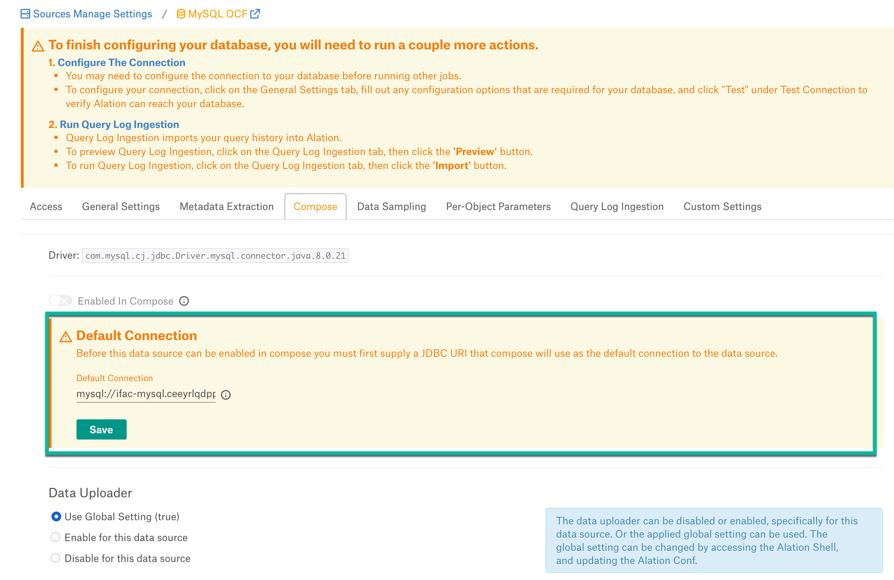
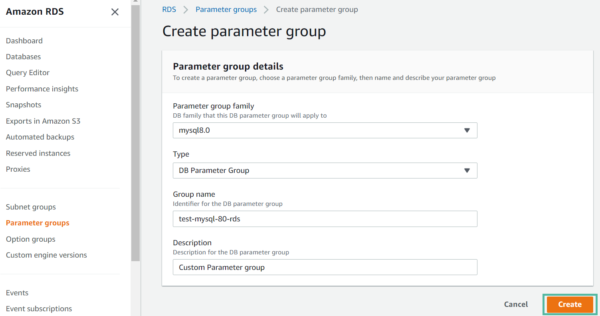
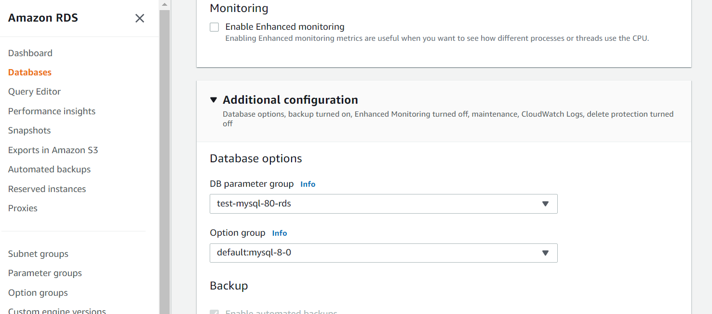

MySQL Connector: Install and Configure¶
Alation Cloud Service Applies to Alation Cloud Service instances of Alation
Customer Managed Applies to customer-managed instances of Alation
Applies from release 2021.4
Prerequisites¶
Firewall Configuration¶
Open outbound TCP port 3306 to MySQL server
Driver¶
The driver for the MySQL Connector is available in Alation by default and does not require installation. Refer to Support Matrix for your Alation release to find out the version of the available driver for MySQL.
Create Service Account¶
Sample SQL to create an account¶
CREATE USER alation IDENTIFIED BY 'password';
GRANT ALL PRIVILEGES ON *.* TO 'alation';
Permissions for Metadata Extraction¶
GRANT SELECT ON INFORMATION_SCHEMA.SCHEMATA TO 'alation'@'%';
GRANT SELECT ON INFORMATION_SCHEMA.TABLES TO 'alation'@'%';
GRANT SELECT ON INFORMATION_SCHEMA.COLUMNS TO 'alation'@'%';
GRANT SELECT ON INFORMATION_SCHEMA.VIEWS TO 'alation'@'%';
GRANT SELECT ON INFORMATION_SCHEMA.STATISTICS TO 'alation'@'%';
GRANT SELECT ON INFORMATION_SCHEMA.TABLE_CONSTRAINTS TO 'alation'@'%';
GRANT SELECT ON INFORMATION_SCHEMA.KEY_COLUMN_USAGE TO 'alation'@'%';
GRANT SELECT ON INFORMATION_SCHEMA.ROUTINES TO 'alation'@'%';
Permission |
Purpose |
|---|---|
GRANT SELECT ON INFORMATION_SCHEMA. SCHEMATA TO ‘alation’@’%’; |
Required for schema extraction. |
GRANT SELECT ON INFORMATION_SCHEMA. TABLES TO ‘alation’@’%’; |
Required for table extraction. |
GRANT SELECT ON INFORMATION_SCHEMA. COLUMNS TO ‘alation’@’%’; |
Required for column extraction. |
GRANT SELECT ON INFORMATION_SCHEMA. VIEWS TO ‘alation’@’%’; |
Required for view extraction. |
GRANT SELECT ON INFORMATION_SCHEMA. STATISTICS TO ‘alation’@’%’; |
Required for index extraction. |
GRANT SELECT ON INFORMATION_SCHEMA. TABLE_CONSTRAINTS TO ‘alation’@’%’; |
Required for primary key and foreign key extraction. |
GRANT SELECT ON INFORMATION_SCHEMA. KEY_COLUMN_USAGE TO ‘alation’@’%’; |
Required for primary key and foreign key extraction. |
GRANT SELECT ON INFORMATION_SCHEMA. ROUTINES TO ‘alation’@’%’; |
Required for function extraction |
Permissions for Table Profiling¶
GRANT SELECT ON [database].* TO 'alation'@'%';
GRANT SHOW VIEW ON [database].* TO 'alation'@'%';
Permissions for Query Log Ingestion¶
GRANT SELECT ON <SCHEMA_NAME.QLI_TABLE_NAME> TO 'alation'@'%';
JDBC URI¶
When building the URI, include the following components:
Hostname or IP of the instance
Port Number
Basic Authentication¶
Format:
mysql://<Hostname_or_IP>:<Port_Number>
Example:
mysql://mysql-data-source.amazonaws.com:3306
SSL Authentication¶
Format:
mysql://<Hostname_or_IP>:<Port_Number>/?allowMultiQueries=true&verifyServerCertificate=true&useSSL=true&requireSSL=true
Example:
mysql://mysql-data-source.amazonaws.com:3306/?allowMultiQueries=true&verifyServerCertificate=true&useSSL=true&requireSSL=true
Configuration in Alation¶
STEP 1: Install the Connector¶
Important
Installation of a MySQL OCF connector requires Alation Connector Manager to be installed as a prerequisite.
If this has not been done on your instance, install the Connector Manager: Install Alation Connector Manager.
Make sure that the connector Zip file which you received from Alation is available on your local machine.
Install the connector from the Connectors Dashboard: refer to Manage Connector Dashboard.
STEP 2: Create and Configure a New MySQL Data Source¶
Log in to the Alation instance and add a new MySQL source. Click on Apps > Sources > Add > Data Source.
Provide the Title for data source and click on Continue Setup.
Select Database Type as MySQL OCF Connector from the dropdown menu. You will be navigated to the Settings page of your new MySQL OCF data source.
Access¶
On the Access tab, set the data source visibility using these options:
Public Data Source—The data source will be visible to all users of the catalog.
Private Data Source—The data source will be visible to the users allowed access to the data source by Data Source Admins.
You can add new Data Source Admin users in the Data Source Admins section.
General Settings¶
Note
This section describes configuring settings for credentials and connection information stored in the Alation database. If your organization has configured Azure KeyVault or AWS Secrets Manager to hold such information, the user interface for the General Settings page will change to include the following icons to the right of most options:

{kind=link}
By default, the database icon is selected, as shown. In the vault case, instead of the actual credential information, you enter the ID of the secret. See Configure Secrets for OCF Connector Settings for details.
Perform the configuration on the General Settings tab.
Application Settings¶
Specify Application Settings if applicable. Click Save to save the changes after providing the information.
Parameter |
Description |
|---|---|
BI Connection Info |
This parameter is used to generate lineage between the current data source and another source in the catalog, for example a BI source that retrieves data from the underlying database. The parameter accepts host and port information of the corresponding BI data source connection. Use the following format: You can provide multiple values as a comma-separated list:
Find more details in BI Connection Info. |
Disable Automatic Lineage Generation |
Select this checkbox to disable automatic lineage generation from QLI, MDE, and Compose queries. By default, automatic lineage generation is enabled. |
Connector Settings¶
Populate the data source connection information and save the values by clicking Save in this section.
Parameter
Description
Data Source Connection
JDBC URI
Provide the JDBC URI constructed in JDBC URI.
Username
Provide the Service Account username.
Password
Provide the Service Account password.
Enable Kerberos Authentication
Enable or disable Kerberos authentication by selecting or clearing the Enable Kerberos Authentication checkbox.
If the Kerberos Authentication checkbox is enabled, upload the krb5.conf file using the upload link below.
Keytab
To enable Kerberos with Keytab authentication, select the Use Keytab checkbox then click Upload Keytab to upload the keytab for the service account you are using.
SSL Certificate
Select the Enable SSL checkbox to enable SSL connection.
If the Enable SSL checkbox is selected, upload the SSL certificate using the upload link below.
Truestore Password
Provide the password for the SSL certificate.
Logging Information
Log Level
Select the Log Level to generate logs. The available log levels are based on the log4j framework.
Logging Configuration¶
Select the logging level for the connector logs and save the values by clicking Save in this section. The available log levels are based on the Log4j framework.
Parameter |
Description |
|---|---|
Log level |
Select the log level to generate logs. The available options are INFO, DEBUG, WARN, TRACE, ERROR, FATAL, ALL. |
You can view the connector logs in Admin Settings > Manage Connectors > Oracle OCF connector.
Obfuscate Literals¶
Obfuscate Literals—Enable this toggle to hide the details of the queries in the catalog page that are ingested via QLI or executed in Compose. This toggle is disabled by default.
Test Connection¶
After specifying the connector settings, under Test Connection, click Test to validate network connectivity.
Deleting the Data Source¶
You can delete your data source from the General Settings tab. Under Delete Data Source, click Delete to delete the data source connection.
{kind=link}
Metadata Extraction¶
You can perform a default extraction or configure extraction based on custom queries.
Default extraction: This MDE is based on default SQL queries that are built in the connector code.
Query based extraction: This MDE is based on custom SQL queries that can be provided by a Data Source Admin. See Query Based Extraction below.
{kind=link}
Application Settings¶
Enable Raw Metadata Dump or Replay: The options in this drop list can be used to dump the extracted metadata into files in order to debug extraction issues before ingesting the metadata into Alation. This feature can be used during testing in case there are issues with MDE. It breaks extraction into 2 steps: first, the extracted metadata is dumped into files and can be viewed; and second, it can be ingested from the files into Alation.
Enable Raw Metadata Dump: Select this option to dump the extracted metadata into a dump folder for debugging purposes. The dumped data will be saved in 4 files: attribute.dump, function.dump, schema.dump, table.dump files in the folder opt/alation/site/tmp/ inside Alation shell.
Enable Ingestion Replay: Select this option to ingest the metadata from the dump files into Alation.
Off - Disable the Raw Metadata Dump or Replay feature. Extracted metadata will be ingested into Alation.
Connector Settings¶
Query Based Extraction¶
Query Based Extraction allows users to customize metadata extraction from the source down to the level of specific metadata types, such as tables, columns, views, and some other by using custom queries.
Tables, Columns, Views and Function Defs are enabled by default at the backend and users cannot disable them.
By default, the following additional metadata types are enabled:
Primary keys
Foreign Keys
Indexes
Functions
Users can disable the metadata types that are not required by clearing the corresponding checkboxes.
System schemas are disabled by default. Users can enable their extraction if required.
To use this feature, you will need to write custom queries to extract the metadata. Alation expects that these queries conform to a specific structure and use the expected reserved identifiers. The sections below provide the expected query structure for each metadata type:
Schema¶
Make sure that your query has a column labelled as CATALOG in the select list.
Example:
SELECT SCHEMA_NAME AS CATALOG
FROM
INFORMATION_SCHEMA.SCHEMATA
WHERE
SCHEMA_NAME NOT IN ('''') AND SCHEMA_NAME NOT IN ( 'mysql' , 'performance_schema' , 'information_schema' , 'innodb' , 'sys')
Table¶
Make sure that your query has columns labelled as CATALOG, TABLE_NAME, TABLE_TYPE, and REMARKS in the select list.
Example:
SELECT DISTINCT TABLE_SCHEMA AS CATALOG,
TABLE_NAME AS TABLE_NAME,
CASE WHEN TABLE_TYPE = 'BASE TABLE' THEN 'TABLE' ELSE 'VIEW' END AS TABLE_TYPE,
TABLE_COMMENT AS REMARKS FROM INFORMATION_SCHEMA.TABLES WHERE TABLE_TYPE='BASE TABLE' AND
TABLE_SCHEMA NOT IN ('''') AND TABLE_SCHEMA NOT IN ( 'mysql' , 'performance_schema' , 'information_schema' , 'innodb' , 'sys')
View¶
Make sure that your query has columns labelled as CATALOG, VIEW_NAME, VIEW_CREATE_STATEMENT, ‘VIEW’ AS VIEW_TYPE, and REMARKS in the select list.
Example:
SELECT TABLE_SCHEMA AS CATALOG,
TABLE_NAME AS 'VIEW_NAME',
VIEW_DEFINITION AS 'VIEW_CREATE_STATEMENT',
'VIEW' AS 'VIEW_TYPE',
'' AS 'REMARKS'
FROM INFORMATION_SCHEMA.VIEWS WHERE TABLE_SCHEMA NOT IN ('''') AND TABLE_SCHEMA NOT IN ( 'mysql' , 'performance_schema' , 'information_schema' , 'innodb' , 'sys')
Column¶
Make sure that your query has columns labelled as CATALOG, TABLE_NAME, TYPE_NAME, DATA_TYPE, COLUMN_NAME, ORDINAL_POSITION, IS_NULLABLE, REMARKS, and COLUMN_DEFAULT in the select list.
Example:
SELECT null AS TABLE_CAT,
c.TABLE_SCHEMA AS CATALOG,
c.TABLE_NAME, c.COLUMN_NAME,
c.DATA_TYPE,
c.COLUMN_TYPE AS TYPE_NAME,
c.IS_NULLABLE,
c.ORDINAL_POSITION,
c.COLUMN_DEFAULT ,
c.COLUMN_COMMENT AS REMARKS
FROM INFORMATION_SCHEMA.COLUMNS AS c,
INFORMATION_SCHEMA.TABLES AS t
WHERE c.TABLE_SCHEMA = t.TABLE_SCHEMA
AND c.TABLE_NAME = t.TABLE_NAME
AND c.TABLE_SCHEMA NOT IN ('''') AND c.TABLE_SCHEMA NOT IN ( 'mysql' , 'performance_schema' , 'information_schema' , 'innodb' , 'sys')
AND TABLE_TYPE IN ('BASE TABLE' , 'SYSTEM VIEW' , 'VIEW') ORDER BY c.TABLE_SCHEMA, c.TABLE_NAME
Primary Key¶
Make sure that your query has columns labelled as CATALOG, TABLE_NAME, and COLUMN_NAME in the select list.
Example:
SELECT k.TABLE_SCHEMA AS CATALOG,k.TABLE_NAME AS 'TABLE_NAME',
k.COLUMN_NAME as 'COLUMN_NAME',
k.TABLE_SCHEMA AS 'SCHEMA'
FROM information_schema.table_constraints t
JOIN information_schema.key_column_usage k
USING(constraint_name,table_schema,table_name)
WHERE t.CONSTRAINT_NAME =k.CONSTRAINT_NAME
AND t.constraint_type='PRIMARY KEY'
AND
t.TABLE_SCHEMA NOT IN ('''') AND t.TABLE_SCHEMA NOT IN ( 'mysql' , 'performance_schema' , 'information_schema' , 'innodb' , 'sys')
Foreign Key¶
Make sure that your query has columns labelled as PK_CATALOG, PK_SCHEMA, PK_TABLE, PK_COLUMN, FK_CATALOG, FK_SCHEMA, FK_TABLE, and FK_COLUMN in the select list. Example:
SELECT null AS PK_CATALOG,
t.TABLE_SCHEMA AS 'PK_SCHEMA',
k.TABLE_NAME AS 'PK_TABLE',
k.COLUMN_NAME as 'PK_COLUMN',
null AS FK_CATALOG,
t.TABLE_SCHEMA AS 'FK_SCHEMA',
t.TABLE_NAME AS 'FK_TABLE',
k.COLUMN_NAME AS 'FK_COLUMN'
FROM information_schema.table_constraints t
JOIN information_schema.key_column_usage k
USING(constraint_name,table_schema,table_name)
WHERE t.constraint_type='FOREIGN KEY' AND
t.TABLE_SCHEMA NOT IN ('''') AND t.TABLE_SCHEMA NOT IN ( 'mysql' , 'performance_schema' , 'information_schema' , 'innodb' , 'sys')
Index¶
Make sure that your query has columns labelled as CATALOG, TABLE_NAME, COLUMN_NAME, and REMARKS in the select list.
Example:
SELECT TABLE_SCHEMA AS CATALOG,
TABLE_NAME AS 'TABLE_NAME',
COLUMN_NAME AS 'COLUMN_NAME'
FROM INFORMATION_SCHEMA.STATISTICS WHERE TABLE_SCHEMA NOT IN ('''') AND TABLE_SCHEMA NOT IN ( 'mysql' , 'performance_schema' , 'information_schema' , 'innodb' , 'sys')
Function¶
Make sure that your query has columns labelled as CATALOG, FUNCTION_NAME, and REMARKS in the select list.
Example:
SELECT ROUTINE_SCHEMA AS CATALOG,
ROUTINE_NAME AS 'FUNCTION_NAME',
ROUTINE_COMMENT AS 'REMARKS'
FROM INFORMATION_SCHEMA.ROUTINES WHERE ROUTINE_SCHEMA NOT IN ('''') AND ROUTINE_SCHEMA NOT IN ( 'mysql' , 'performance_schema' , 'information_schema' , 'innodb' , 'sys')
Function Definition
Make sure that your query has columns labelled as CATALOG, FUNCTION_NAME, ARG_NAME, TYPE_NAME, ARG_TYPE, and ARG_DEF in the select list.
Example:
SELECT ROUTINE_SCHEMA AS CATALOG,
ROUTINE_NAME AS FUNCTION_NAME,
SPECIFIC_NAME AS ARG_NAME,
DATA_TYPE AS TYPE_NAME,
ROUTINE_TYPE AS ARG_TYPE,
ROUTINE_DEFINITION AS ARG_DEF
FROM INFORMATION_SCHEMA.ROUTINES WHERE ROUTINE_SCHEMA NOT IN ('''') AND ROUTINE_SCHEMA NOT IN ( 'mysql' , 'performance_schema' , 'information_schema' , 'innodb' , 'sys')
Selective Extraction¶
On the Metadata Extraction tab, you can select the Schemas to include or exclude from extraction. Selective extraction settings are used to apply a filter to include or exclude a list of schemas.
Enable the Selective Extraction toggle if you want only a subset of schemas to be extracted.
Click Get List of Schemas to first fetch the list of schemas. The status of the Get Schemas action will be logged in the Extraction Job Status table at the bottom of the Metadata Extraction page.
When Schema synchronization is complete, a drop-down list of the Schemas will become enabled.
Select one or more schemas as required.
Check if you are using the desired filter option. Available filter options are described below:
Filter Option
Description
Extract all Schemas except
Extract metadata from all Schemas except from the selected Schemas.
Extract only these Schemas
Extract metadata only from the selected Schemas.
Click Run Extraction Now to extract metadata. The status of the extraction action is also logged in the Job History table at the bottom of the page.
Automated Extraction¶
If you wish to automatically update the metadata extracted into the Catalog, under Automated and Manual Extraction, turn on the Enable Automated Extraction switch and select the day and time when metadata must be extracted. The metadata extraction will be automatically scheduled to run on the selected schedule.
Compose¶
On the Compose tab, an admin can enable the use of the Compose tool for this data source.
Before you enable Compose, provide the JDBC URI in the Default Connection field which Compose will use as a default connection and Save.
Enable the Enabled in Compose toggle to enable Compose for this data source. Select Compose Connection Sharing option based on the description in the table:
Compose Connection Option
Description
Shared connections across tabs
This option lets users use the same connection across multiple Compose tabs.
Separate connection per tab
Users can use different connections for each Compose tab, which enables them to run multiple queries at the same time.
Select a Data Uploader option based on the description below:
Data Uploader
Description
Use Global Setting (True)
or
Use Global Setting (False)
Use the global setting option that is set in alation_conf using
alation.data_uploader.enabledflag.Users can upload data if the flag is set to true or if the flag is set to
false, users cannot upload the data for any data source.Enable for this data source
Use this option to enable the data upload for this data source and override the global setting if the global setting in alation_conf if it is set to false.
Disable for this data source
Use this option to disable the data upload for this data source and override the global setting in alation_conf if it is set to
true.Note
OAuth connection is not supported for this data source.
{kind=link}
Data Sampling¶
Automated and Manual Sampling¶
Users can either perform manual sampling or enable automated sampling:
To perform manual sampling, make sure that the Enable Automated Sampling toggle is Off. Click the Sample button to do manual sampling.
Set the Enable Automated Sampling toggle to On to perform the automated sampling.
Set a schedule in the corresponding fields of the schedule section, specify values for week, day and time.
Select the number of tables to be sampled by selecting a value in the dropdown list. By default, all tables are sampled. When a specific number of tables is selected, unprofiled and popular tables are prioritized.
Click Sample.
Dynamic Sampling¶
Dynamic Sampling allows users to perform user-specific sampling and profiling. They will only be able to see the data they have access to on the database. Sample data will only be visible to the user who initiated sampling or profiling.
Automated sampling must be disabled to perform dynamic sampling.
{kind=link}
Per-Object Parameters¶
Refer to Per-Object Parameters.
Query Log Ingestion¶
QLI Setup for MySQL RDS¶
Perform the following steps to configure the pre-requisites for MySQL RDS QLI:
Create an RDS instance with MySQL version 8.0.
In the AWS console, go to Amazon RDS > Parameter groups > Create parameter group.
Provide the values in the following fields and click Create.
Parameter group family
Type
Group Name
Descriptions
Go to Parameter groups and select the newly created parameter group.
Click Edit parameters and update the following parameters with the values below:
Parameter
Value
general_log
1
Slow_query_log
1
Long_query_time
0
log_output
TABLE
Click Preview changes to view the modified parameter values. Click Save changes.
Go to Databases > RDS Instance.
Associate the DB parameter group with the RDS instance. Click Modify > Additional Configuration > DB parameter group and select the DB parameter group.
Note
The RDS instance major version and DB parameter group instance selection version must be the same. If the version is not same, then the DB parameter group will not be listed in this dropdown.
Restart the database.
Note
The DB parameter group does not get associated with the RDS instance until the instance is restarted.
{kind=link}
{kind=link}
{kind=link}
Configuration in Alation¶
You can either create a table for Alation to pull the query logs from or use a custom query to query the slow_log table.
Note
Log tables keep growing until the respective logging activities are turned off by resetting the appropriate parameter to 0. A large amount of data often accumulates over time, which can use up a considerable percentage of your allocated storage space. Rotating a table saves its contents to a backup table and then creates a new empty log table. You can manually rotate the log tables with the following commands:
CALL mysql.rds_rotate_slow_log;
Note
Alation does not support the query logs in the general_log table.
Connector Settings¶
Table-Based QLI¶
Use the below query format to create a new table and flush the query history from the slow_log table.
MySQL:
CREATE TABLE <Table_Name> AS SELECT * FROM(SELECT user_host as username,start_time as starttime,sql_text as queryString,thread_id as sessionid,session_start_time as sessionstarttime,query_time as seconds,'N' as cancelled,db as defaultDatabasesFROM <slow_log table>);
MySQL RDS:
CREATE view <View_Name> as
SELECT
start_time AS startTime,
CONCAT_WS(
'\/',
user_host,
DATE(start_time)
) AS sessionId,
SUBSTR(
user_host
FROM
1 FOR POSITION('[' in user_host) -1
) AS userName,
sql_text AS queryString,
TIME_TO_SEC(query_time) AS Seconds,
db AS defaultDatabases,
'N' AS cancelled,
start_time AS sessionStartTime
FROM
mysql.slow_log WHERE
(
(
sql_text NOT LIKE 'SET net_write_timeout%'
AND sql_text NOT LIKE 'SET autocommit%'
AND sql_text NOT LIKE 'SET character_set_results%'
AND sql_text NOT LIKE 'Quit'
AND sql_text NOT LIKE 'SET sql_mode%'
AND sql_text NOT LIKE '%mysql-connector-java%'
)
OR TIME_TO_SEC(query_time) > 0
)
-- AND start_time >= ?
-- AND start_time < ?
ORDER BY CONCAT_WS('\/', user_host, DATE(start_time)), start_time;
In the Table Name field, provide the name of the table in which the query logs are available. The table name must be provided in the following format:
database.table/viewname
Custom Query-Based QLI¶
When you cannot create a table or viewI, you can use a Custom QLI Query to perform QLI. Provide the expected query structure as shown below and click Save:
MySQL:
SELECT user_host AS username,
start_time AS starttime,
sql_text AS queryString,
thread_id AS sessionid,
start_time AS sessionstarttime,
query_time AS seconds,
'N' AS cancelled,
db AS defaultDatabases
FROM <slow_log on MySQL>;
MySQL RDS:
SELECT
start_time AS startTime,
CONCAT_WS(
'\/',
user_host,
DATE(start_time)
) AS sessionId,
SUBSTR(
user_host
FROM
1 FOR POSITION('[' in user_host) -1
) AS userName,
sql_text AS queryString,
TIME_TO_SEC(query_time) AS Seconds,
db AS defaultDatabases,
'N' AS cancelled,
start_time AS sessionStartTime
FROM
mysql.slow_log WHERE
(
(
sql_text NOT LIKE 'SET net_write_timeout%'
AND sql_text NOT LIKE 'SET autocommit%'
AND sql_text NOT LIKE 'SET character_set_results%'
AND sql_text NOT LIKE 'Quit'
AND sql_text NOT LIKE 'SET sql_mode%'
AND sql_text NOT LIKE '%mysql-connector-java%'
)
OR TIME_TO_SEC(query_time) > 0
)
-- AND start_time >= ?
-- AND start_time < ?
ORDER BY CONCAT_WS('\/', user_host, DATE(start_time)), start_time;
Automated and Manual QLI¶
Users can either perform manual Query Log Ingestion or enable automated Query Log Ingestion:
To perform manual Query Log Ingestion, make sure that the Enable Automated Query Log Ingestion toggle is Off. Click the Import button to do manual Query Log Ingestion.
Set the Enable Automated Query Log Ingestion toggle to On to perform the automated Query Log Ingestion.
Set a schedule in the corresponding fields of the schedule section, specify values for week, day and time.
Click Import.
Custom Settings¶
This configuration option is available if Profiling V2 is enabled.
To profile a column, Alation runs a default query if no custom query is specified for this column. Default queries for column profiling differ depending on the data type: numeric or non-numeric.
The default query supplied by Alation can be modified based on the user requirements and datasource type. The following default query template can be used to revert back to the default query from custom query:
Numeric columns:
SELECT
MIN({column_name}) AS MIN,
MAX({column_name}) AS MAX,
AVG({column_name}) AS MEAN,
(COUNT(*) - COUNT({column_name})) AS "#NULL",
(CASE WHEN COUNT(*) > 0 THEN ((COUNT(*) - COUNT({column_name})) * 100.0 / COUNT(*)) ELSE 0.0 END) AS "%NULL"
FROM {schema_name}.{table_name};
Non numeric columns:
SELECT
((SUM(CASE WHEN {column_name} IS NULL THEN 1 ELSE 0 END))) AS "#NULL",
(CASE WHEN COUNT(*) > 0 THEN ((((SUM(CASE WHEN {column_name} IS NULL THEN 1 ELSE 0 END))) * 100.0 / count(*)) ) ELSE 0.0 END ) AS "%NULL"
FROM {schema_name}.{table_name};
Important
The profiling queries MUST contain the {column_name}, {schema_name}, and {table_name}. Users must check the compatibility of the default query based on the datasource type and modify it if required.
The default Profiling query calculates the Profiling stats that are displayed on the Overview tab of the Column catalog page. When you customize the query, you can also customize the statistics that should be calculated and displayed:
{kind=link}
Troubleshooting¶
Refer to Troubleshooting.